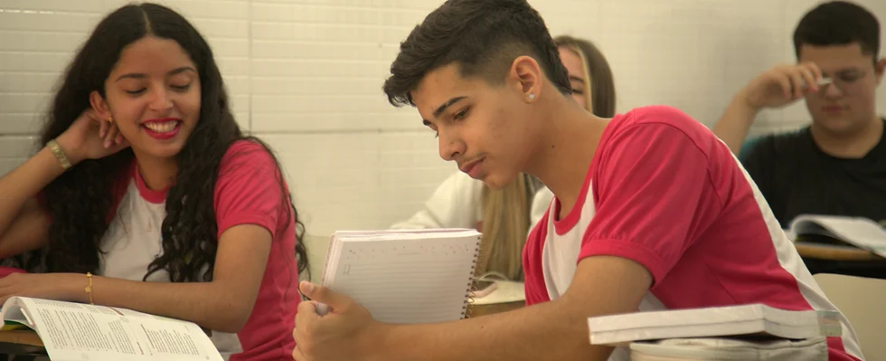

O Ensino Médio é onde ocorre a formação dos estudantes, aprofundando os conhecimentos constituídos ao longo do caminho, inclusive nos aspectos socioemocionais: consolidação das habilidades de autoconhecimento, auto regulação dos novos impulsos com os quais o adolescente precisa aprender a lidar.
Oferecer uma formação consistente para que o aluno se torne um adulto feliz com suas escolhas e faça as melhores escolhas, esse é o nosso objetivo. Preparamos o jovem para ingressar em universidades de referência e buscamos ajudá-lo a escolher sua profissão.
Em parceria com a Escola da Inteligência que garante ao estudante ser protagonista do próprio processo de escolarização e se tornar o profissional do futuro, aquele que é preparado não só para usar suas competências técnicas, mas, principalmente, sua inteligência emocional, desenvolvida no melhor Projeto de Vida que sua escola pode oferecer. Afinal, como ser protagonista sem conhecer a si mesmo e as próprias habilidades? Ensinamos o funcionamento da mente, e esse será o diferencial dos jovens que passarem pelo Ensino Médio com o Itinerários Inteligência Jovem.
Ele compreende do 1º ao 5º ano e nele desenvolvemos atividades integradas de acordo com características biopsicossociais dos alunos,
contribuindo para a compreensão do ambiente natural e social, bem como o desenvolvimento de atitudes responsáveis e a construção de valores.
Os alunos desse seguimento também tem acesso a um ambiente virtual de aprendizagem que pode ser acessado por estudantes em qualquer hora e em qualquer lugar. Chamado Plurall, nele disponibilizamos listas de exercícios para que os alunos possam praticar o que aprenderam em aula, vídeos para ajudar a solucionar as tarefas e tutores que respondem detalhadamente as dúvidas que surgem em relação às questões e ao conteúdo do material didático, que também está disponível.